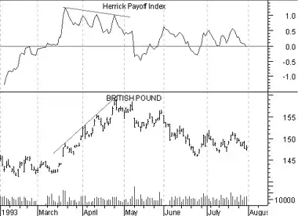

Herrick Payoff Index
Overview
The Herrick Payoff Index is designed to show the amount of money flowing into or out of a futures contract. The Index uses open interest during its calculations, therefore, the security being analyzed must contain open interest.
The Herrick Payoff Index was developed by John Herrick.
Interpretation
When the Herrick Payoff Index is above zero, it shows that money is flowing into the futures contract (which is bullish). When the Index is below zero, it shows that money is flowing out of the futures contract (which is bearish).
The interpretation of the Herrick Payoff Index involves looking for divergences between the Index and prices.
Example
The following chart shows the British Pound and the Herrick Payoff Index.
 The trendlines identify a bearish divergence where prices were making new highs while the Payoff Index was failing to make new highs. As is typical with divergences, prices corrected to confirm the indicator.Calculation
The Herrick Payoff Index requires two inputs, a smoothing factor known as the "multiplying factor" and the "value of a one cent move."
The multiplying factor is part of a smoothing mechanism. The results are similar to the smoothing obtained by a moving average. For example, a multiplying factor of ten produces results similar to a 10-period moving average.
Mr. Herrick recommends 100 as "the value of a one cent move" for all commodities except silver, which should be 50.
The calculation of the Herrick Payoff Index ("HPI") is:

Where: